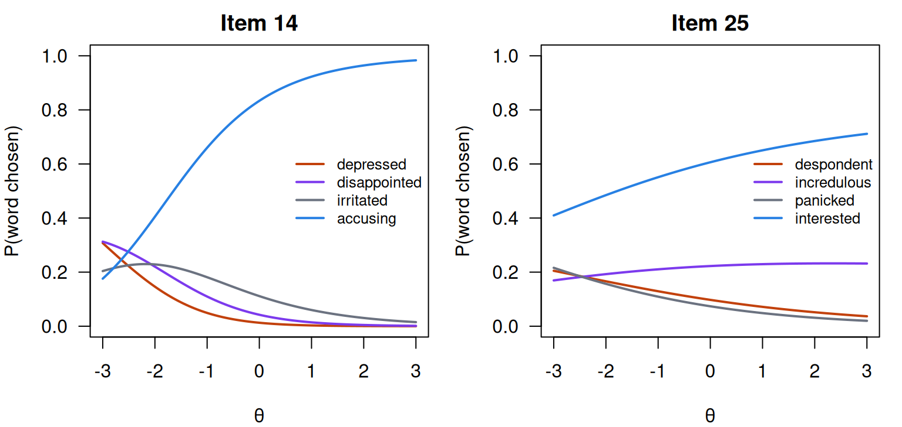
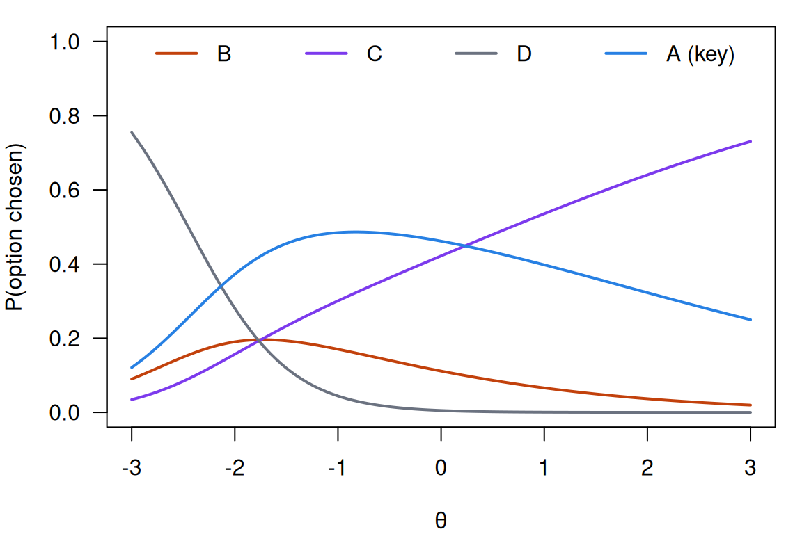

Nominal response and multiple-choice models
What this is for
Score a multiple-choice item 0/1 and two respondents who both got it wrong look the same, though one chose the answer a nearly-right reader would choose and the other the answer nobody who read the question would. Guessing and priors asked what to do about the floor of an item’s curve; this lesson asks what the wrong answers say. It gives every option its own curve (Bock’s nominal response model), reads those curves, adds a “don’t know” state (Thissen and Steinberg’s multiple-choice model), and fits the models to the Reading the Mind in the Eyes Test and a medical residency exam. The short answers: the wrong answers add information about the respondents who miss items, and they point to the handful of items where the keyed answer behaves like a wrong one. On a multiple-choice test I’d keep the option chosen and read its curves before scoring anything 0/1.
Goals
By the end of this lesson you should be able to:
- write down Bock’s nominal response model, say how its slopes order the options along \(\theta\), and say when it becomes the generalized partial credit model;
- read option curves: tell a key from a falling distractor, one that draws partial knowledge, and one that rises with \(\theta\);
- say where distractors add information and why, and compare an item’s information with and without them;
- explain how Thissen and Steinberg’s multiple-choice model and the nested logit model describe guessing, and how that differs from the 3PL’s floor;
- fit the nominal and nested logit models with
mirt, and use option curves to find items that need a second look.
Core ideas
Every option gets a curve
What if we can’t trust an order in advance? The options of a multiple-choice item are four answers, one of them keyed. Bock (1972) dropped the ordering and gave each option \(k\) of item \(i\) its own slope \(a_{ik}\) and intercept \(\gamma_{ik}\): \[\Pr(x_{ij} = k \mid \theta_j) = \frac{\exp(a_{ik}\theta_j + \gamma_{ik})}{\sum_{h} \exp(a_{ih}\theta_j + \gamma_{ih})}.\] Only differences between options matter, so one option is fixed at \(a = \gamma = 0\) as a reference. With two options this is the 2PL, with slope \(a_{i1} - a_{i0}\). Thissen, Cai and Bock (2010) describe the model’s parameterizations and uses. We write \(\gamma\) for the intercept because \(c\) is the lower asymptote; mirt calls it d.
What do the slopes do? The log odds of option \(k\) against option \(h\) is \((a_k - a_h)\theta + (\gamma_k - \gamma_h)\), a straight line in \(\theta\). So the option with the largest slope wins at the top of the scale, the one with the smallest wins at the bottom, and an option whose slope is in between can be the most likely only in the middle, and only if its intercept is large enough. The model, not the scorer, orders the options along \(\theta\).
Try it: option curves
A four-option item. The key’s slope is 1 and its intercept 0; set the three distractors.
At the defaults B, with the smallest slope, takes over at the bottom; C, with a slope between B’s and the key’s, peaks near \(\theta = 0\) at about 0.46; and the key leads from \(\theta = 0.5\) up. Give D a slope of 1.5 and it overtakes the key at the top.
Reading option curves
What do the curves say about an item? Thissen, Steinberg and Fitzpatrick (1989) treat the distractors as part of the item and read their curves as evidence about it. Four shapes recur:
- the key rises;
- a distractor that falls draws the respondents lowest on \(\theta\);
- a distractor that peaks in the middle draws respondents who know part of the answer;
- a distractor that rises at the top is chosen more by stronger respondents: a second defensible answer, or a sign that the key should be checked.
A distractor almost nobody chooses has a flat, low curve. Gierl, Bulut, Guo and Zhang (2017) review how distractors are written, analysed and used.
Try it: which is the key?
These are the fitted option curves for one item of the residency exam in With real data, labelled as the exam printed them. Which option is keyed?
We return to this item below.
Distractors carry information, mostly at low θ
For the nominal model the formula gives something simple: an item’s information is the variance of its option slopes, weighted by how likely each option is at \(\theta\), \[I(\theta) = \sum_k P_k(\theta)\,\big(a_k - \bar a(\theta)\big)^2, \qquad \bar a(\theta) = \sum_k P_k(\theta)\,a_k.\] Scoring 0/1 merges the three distractors into one category. What does that cost? Split the variance into a part between “key” and “not key” and a part among the distractors: \[I(\theta) = \underbrace{P(1 - P)\,(a_{\text{key}} - \bar a_D)^2}_{\text{scored 0/1}} \;+\; (1 - P)\,\text{Var}_D(a \mid \theta),\] where \(P\) is the key’s probability, and \(\bar a_D\) and \(\text{Var}_D\) are the mean and variance of the slopes among the distractors, weighted by how often each is chosen at \(\theta\). The first term is the information in the 0/1 score; the second is what the distractors add. It is weighted by \(1 - P\), the chance of choosing a distractor at all, so it matters below the item’s difficulty and fades above it. The Go deeper callout derives both lines.
Try it: information with and without distractors
The item from the option-curves widget: move its sliders and this plot follows.
At the defaults the options give 0.22 at \(\theta = -2\), where the 0/1 score gives 0.05, and 0.20 against 0.19 at \(\theta = 2\), where 80% choose the key. Give all three distractors the same slope and the two curves coincide: distractors that don’t differ in slope carry nothing beyond the 0/1 score.
Guessing, again: the multiple-choice model
What does the nominal model say about a respondent who knows nothing? As \(\theta\) falls, the option with the smallest slope takes over, so the weakest respondents all choose one distractor rather than spreading over the options. Thissen and Steinberg (1984) add a latent “don’t know” category, 0, with its own slope and intercept, and share its respondents among the options in proportions \(\delta_k\) that sum to 1: \[\Pr(x = k \mid \theta) = \frac{\exp(a_k\theta + \gamma_k) + \delta_k\exp(a_0\theta + \gamma_0)}{\sum_{h=0}^{K} \exp(a_h\theta + \gamma_h)}.\] With \(a_0\) the smallest slope, “don’t know” takes over at the bottom, and every option’s probability heads for its \(\delta_k\). The key’s floor is \(\delta_{\text{key}}\), estimated rather than assumed to be \(1/k\), and each distractor gets a floor too. Guessing here is a state a respondent is in, with its own account of which options guessers choose.
Try it: a “don’t know” category
A four-option item under the multiple-choice model. Choose the share of “don’t know” respondents who pick the key, and how unevenly the rest spread over the three distractors.
At the defaults every curve starts at 0.25. The key’s curve then dips to 0.19 near \(\theta = -1\) before it rises: respondents just above “don’t know” are drawn to distractor B, and choose the key less often than guessers do. A 3PL curve can’t dip. Lower the key’s share to 0.1 and its floor falls below chance, like the items below chance in Guessing and priors.
The multiple-choice model isn’t in mirt. mirt does fit the nested logit model of Suh and Bolt (2010), which splits a response in two: whether the respondent chose the key, from a 2PL (or a 3PL, with a floor), and, if not, which distractor, from a nominal model. The key’s curve is then a 2PL, rising everywhere, and the distractors add their information below it. The nested logit suits scores that should stay on a 2PL or 3PL scale; Bock’s model suits a first look at items, since it assumes nothing about the key; the multiple-choice model suits tests on which many respondents sit near chance.
Nominal and ordinal are two ends of one range
Bock’s model assumes no order. Give option \(k\) the slope \(a \cdot k\) and it becomes the GPCM, with the categories ordered in advance (problem 1; Thissen & Steinberg, 1986). Between the two ends, the fitted slopes of a nominal model say how ordered the categories are: a Likert item whose slopes come out in the order of its categories behaves as ordinal, and one whose neighbouring categories share a slope is using fewer categories than it offers. Nalbandyan, Gilbert, Franco and Domingue (2026) use nominal fits this way to ask how ordered the categories of rating scales are. The order of categories, like the order of options, is something the data can check.
Simulate
The code below simulates 1,000 respondents answering 20 four-option items from the nominal model. On each item two distractors fall with \(\theta\), one is flat (it draws respondents with partial knowledge), and the key rises. It fits the 2PL to the 0/1 scores and the nominal model to the options chosen, and compares both with the true \(\theta\), overall and in the bottom and top thirds. The first run takes 20–30 seconds while R and mirt load.
With the seed as written, the nominal model recovers \(\theta\) a little better overall (correlations of 0.946 against 0.929) and more clearly in the bottom third (0.778 against 0.677), while in the top third the RMSEs are close (0.331 against 0.346). Set partial <- -1, so that every distractor falls alike, and the advantage vanishes (0.670 against 0.664 in the bottom third). Try np <- 300 to see how noisy the option slopes become.
Download this code to run it in your own R session.
With real data
The RMET’s wrong words
Our main example is wilmer-rmet-normative-data-set-2022, the normative sample of the Reading the Mind in the Eyes Test released by Kim et al. (2024), used again on purpose: From the 1PL to the 4PL scored it 0/1, and here we ask which wrong word each respondent chose. Each item shows a photograph of the eyes of a face and offers four words for what the person is thinking or feeling (Baron-Cohen et al., 2001); the IRW has the word chosen, not the photographs. For item 14 they are accusing (keyed), irritated, disappointed and depressed, the four listed for that item in Baron-Cohen et al.’s Appendix A (2001, p. 248). Its job is to show what the distractors add on an easy test with almost nobody near chance. Download the code to run every chunk yourself; it needs mirt (Chalmers, 2012).
Code
library(mirt)
# The same pinned version as in the 1PL-to-4PL lesson. resp is 1 when the respondent
# chose the correct word; resp_raw is the word they chose.
rmet_url <- "https://redivis.com/api/v1/tables/datapages.item_response_warehouse_2:v22_0.wilmer-rmet-normative-data-set-2022/rows?format=csv"
df <- read.csv(rmet_url)
df$item_n <- as.numeric(gsub("\\D", "", df$item))
items <- sort(unique(df$item_n))
ids <- sort(unique(df$id))
# The keyed word for each item is the one scored 1.
key <- tapply(df$resp_raw[df$resp == 1], df$item_n[df$resp == 1], unique)
# Order each item's four words with the key last: mirt's nominal model fixes the
# scoring of the first and last categories, and putting the key last points theta
# the right way.
words <- lapply(items, function(i) {
w <- sort(unique(df$resp_raw[df$item_n == i]))
c(setdiff(w, key[[as.character(i)]]), key[[as.character(i)]])
})
names(words) <- paste0("item_", items)
# Two wide matrices: the option chosen (1-4, key = 4) and the 0/1 score.
opt <- x01 <- matrix(NA, length(ids), length(items), dimnames = list(NULL, names(words)))
for (j in seq_along(items)) {
d <- df[df$item_n == items[j], ]
r <- match(d$id, ids)
opt[r, j] <- match(d$resp_raw, words[[j]])
x01[r, j] <- d$resp
}
c(respondents = nrow(opt), items = ncol(opt), missing = sum(is.na(opt)))respondents items missing
17680 36 0 Code
words$item_14 # the three distractors, then the key[1] "depressed" "disappointed" "irritated" "accusing" All 17,680 respondents chose a word on every item. The key comes last in each item’s words, which sets the direction of \(\theta\) in mirt’s nominal model.
Code
# A random 4,000 respondents keep the fits to seconds.
set.seed(252)
s <- sample(nrow(opt), 4000)
rmet_opt <- as.data.frame(opt[s, ])
rmet_01 <- as.data.frame(x01[s, ])
fit_2pl <- mirt(rmet_01, 1, itemtype = "2PL", verbose = FALSE)
fit_nom <- mirt(rmet_opt, 1, itemtype = "nominal", verbose = FALSE)
# theta from the nominal model runs the same way as the number correct:
round(cor(fscores(fit_nom)[, 1], rowSums(rmet_01)), 2)[1] 0.96Code
# Option curves: each word's probability at theta = -3, 0 and 3, and where it peaks.
g <- seq(-3, 3, by = 0.05)
curves <- do.call(rbind, lapply(seq_along(words), function(j) {
P <- probtrace(extract.item(fit_nom, j), g)
data.frame(item = j, word = words[[j]], key = c(FALSE, FALSE, FALSE, TRUE),
p_lo = P[1, ], p_mid = P[g == 0, ], p_hi = P[nrow(P), ],
peak = g[apply(P, 2, which.max)])
}))
dis <- curves[!curves$key, ]
c(distractors = nrow(dis), peak_inside = sum(dis$peak > -3 & dis$peak < 3),
falling = sum(dis$peak == -3), rising = sum(dis$peak == 3))distractors peak_inside falling rising
108 38 70 0 Code
# The distractors most chosen by the ablest respondents (theta = 3):
dis_hi <- dis[order(-dis$p_hi), c("item", "word", "p_lo", "p_mid", "p_hi", "peak")]
rnd <- function(d) transform(d, p_lo = round(p_lo, 2), p_mid = round(p_mid, 2), p_hi = round(p_hi, 2))
head(rnd(dis_hi), 3)| item | word | p_lo | p_mid | p_hi | peak | |
|---|---|---|---|---|---|---|
| P.224 | 25 | incredulous | 0.17 | 0.22 | 0.23 | 2.35 |
| P.116 | 17 | affectionate | 0.29 | 0.27 | 0.18 | -2.10 |
| P.3 | 1 | irritated | 0.18 | 0.20 | 0.18 | -0.50 |
Code
# Item 14, keyed "accusing":
rnd(curves[curves$item == 14, c("word", "p_lo", "p_mid", "p_hi", "peak")])| word | p_lo | p_mid | p_hi | peak | |
|---|---|---|---|---|---|
| P.113 | depressed | 0.31 | 0.01 | 0.00 | -3.0 |
| P.213 | disappointed | 0.31 | 0.04 | 0.00 | -3.0 |
| P.313 | irritated | 0.20 | 0.11 | 0.02 | -2.2 |
| P.413 | accusing | 0.18 | 0.83 | 0.98 | 3.0 |
The nominal model’s \(\theta\) correlates 0.96 with the number correct. Of the 108 distractors, 70 fall across the whole range from \(\theta = -3\) to 3, 38 peak inside it, and none rises to the top. Item 14’s irritated is the typical peak: it draws 20% at \(\theta = -3\), peaks near \(-2.2\) and falls to 2% at \(\theta = 3\), while depressed and disappointed draw 31% each at the bottom and almost nobody at the top. Item 25 is the exception. Its keyed word is interested, and incredulous draws 17% at \(\theta = -3\), 22% at 0 and 23% at 3, peaking at 2.35. Among the ablest respondents, almost a quarter read that face as incredulous.
Code
# Option curves for two items: 14 (keyed "accusing") and 25 (keyed "interested").
op <- par(mfrow = c(1, 2), mar = c(4, 4, 2, 1))
cols <- c("#c2410c", "#7c3aed", "#6b7280", "#2780e3")
for (j in c(14, 25)) {
P <- probtrace(extract.item(fit_nom, j), g)
matplot(g, P, type = "l", lty = 1, lwd = 2, col = cols, ylim = c(0, 1),
xlab = "θ", ylab = "P(word chosen)", main = paste("Item", j), las = 1)
legend("right", words[[j]], col = cols, lwd = 2, bty = "n", cex = 0.8)
}
Code
par(op)Code
# Test information from the nominal model and from the 2PL on the same 0/1 scores.
# Each fit sets its own scale (theta standard normal), so the comparison is close,
# not exact.
at <- matrix(c(-3, -2, -1, 0, 1, 2))
round(data.frame(theta = at[, 1], nominal = testinfo(fit_nom, at),
two_pl = testinfo(fit_2pl, at)), 1)| theta | nominal | two_pl |
|---|---|---|
| -3 | 6.9 | 3.1 |
| -2 | 7.2 | 4.1 |
| -1 | 5.6 | 4.3 |
| 0 | 3.5 | 3.3 |
| 1 | 2.0 | 2.1 |
| 2 | 1.1 | 1.2 |
Below the middle the options add a lot: 7.2 against 4.1 at \(\theta = -2\), and 6.9 against 3.1 at \(-3\). From \(\theta = 0\) up the two are within 0.2 (each fit sets its own scale, so the comparison is close rather than exact). On a test this easy the wrong words inform only about the minority who choose them.
Do the respondents near chance choose at random?
Code
# Respondents at or below chance (9 of 36) in the full sample: which words did they
# choose? If they picked at random, each of the four would draw a quarter.
low <- rowSums(x01) <= 9
share <- function(rows) {
t(sapply(seq_along(words), function(j) {
tab <- tabulate(opt[rows, j], 4) / sum(rows)
c(key = tab[4], top_distractor = max(tab[1:3]), bottom_distractor = min(tab[1:3]))
}))
}
c(respondents_at_or_below_chance = sum(low))respondents_at_or_below_chance
84 Code
round(apply(share(low), 2, median), 2) # medians over the 36 items key top_distractor bottom_distractor
0.20 0.33 0.18 Code
# The same for everyone's wrong answers: the most popular distractor's share of them.
wrong_top <- sapply(seq_along(words), function(j) {
w <- opt[x01[, j] == 0, j]
max(tabulate(w, 4)[1:3]) / length(w)
})
round(quantile(wrong_top, c(0, 0.5, 1)), 2) 0% 50% 100%
0.37 0.54 0.71 Not quite. For the 84 respondents at or below chance, the median item’s key draws 20% of them, its most popular distractor 33% and its least popular 18%, where random choice would give 25% each. Among all wrong answers, the most popular distractor takes a median of 54% (37% to 71% across items), against a third if wrong answers were random. The low lower asymptotes of From the 1PL to the 4PL don’t mean that nobody guesses. They mean that almost nobody sits near chance, and that those who miss an item seldom miss it at random.
Code
# The nested logit model (Suh & Bolt, 2010): a 2PL for the key and, among wrong
# answers, a nominal model for which distractor. mirt needs the key (here, 4).
fit_nrm <- mirt(rmet_opt, 1, itemtype = "2PLNRM", key = rep(4, ncol(rmet_opt)), verbose = FALSE)
sapply(list(nominal = fit_nom, nested_logit = fit_nrm),
function(f) round(c(parameters = extract.mirt(f, "nest"), AIC = extract.mirt(f, "AIC"),
BIC = extract.mirt(f, "BIC")))) nominal nested_logit
parameters 216 216
AIC 242847 242884
BIC 244207 244244Code
# Its keyed curve is a 2PL: how far is it from the 2PL fitted to the 0/1 scores?
key_gap <- sapply(seq_along(words), function(j)
max(abs(probtrace(extract.item(fit_nrm, j), g)[, 4] - probtrace(extract.item(fit_2pl, j), g)[, 2])))
round(max(key_gap), 3)[1] 0.014Code
round(data.frame(theta = at[, 1], nested_logit = testinfo(fit_nrm, at)), 1)| theta | nested_logit |
|---|---|
| -3 | 5.2 |
| -2 | 5.7 |
| -1 | 5.1 |
| 0 | 3.7 |
| 1 | 2.2 |
| 2 | 1.2 |
The nested logit model has the same number of parameters (216) and fits slightly worse by AIC (242,884 against 242,847): the keyed curves gain little from being free to bend. Its keyed curves stay within 0.014 of the 2PL fitted to the 0/1 scores, and its test information sits between the two, 5.7 at \(\theta = -2\).
A residency exam
For contrast, borges_brazil_residency_2024_pbt: 100 four-option items (A–D) from the paper-based version of a medical residency exam at a hospital in Brazil, taken by 1,994 applicants (Borges et al., 2024; the data are released under CC0). Its job is to show a harder test, on which a few keyed answers behave unlike the rest. The text column holds the option marked, and we take the key from resp.
Code
# resp is 1 for the keyed option; text is the option marked (A-D). A few responses
# are "_" or "X" (no single option recorded), scored 0 in resp.
borges_url <- "https://redivis.com/api/v1/tables/datapages.item_response_warehouse:v60_0.borges_brazil_residency_2024_pbt/rows?format=csv"
bz <- read.csv(borges_url)
blank <- !bz$text %in% c("A", "B", "C", "D")
c(blank_responses = sum(blank), candidates_with_a_blank = length(unique(bz$id[blank]))) blank_responses candidates_with_a_blank
133 80 Code
bz <- bz[!bz$id %in% unique(bz$id[blank]), ] # keep complete candidates
bkey <- tapply(bz$text[bz$resp == 1], bz$item[bz$resp == 1], unique)
bitems <- sort(unique(bz$item))
bids <- sort(unique(bz$id))
blev <- lapply(bitems, function(i) c(setdiff(LETTERS[1:4], bkey[[as.character(i)]]), bkey[[as.character(i)]]))
bopt <- b01 <- matrix(NA, length(bids), length(bitems), dimnames = list(NULL, paste0("Q", bitems)))
for (j in seq_along(bitems)) {
d <- bz[bz$item == bitems[j], ]
r <- match(d$id, bids)
bopt[r, j] <- match(d$text, blev[[j]])
b01[r, j] <- d$resp
}
bopt <- as.data.frame(bopt); b01 <- as.data.frame(b01)
c(candidates = nrow(b01), items = ncol(b01))candidates items
1914 100 Code
# Item-rest correlations: each item against the sum of the other 99.
tot <- rowSums(b01)
ir <- sapply(b01, function(x) cor(x, tot - x))
c(below_0.1 = sum(ir < 0.1), below_0 = sum(ir < 0))below_0.1 below_0
19 4 Code
round(sort(ir)[1:4], 3) Q21 Q32 Q78 Q95
-0.061 -0.050 -0.033 -0.001 There are 133 responses recorded as _ or X rather than an option, from 80 applicants; we keep the 1,914 with an option on every item. Nineteen items have item-rest correlations below 0.1 and four below 0, item 21 lowest at \(-0.061\).
Code
fitb_2pl <- mirt(b01, 1, itemtype = "2PL", verbose = FALSE)
fitb_nom <- mirt(bopt, 1, itemtype = "nominal", verbose = FALSE, technical = list(NCYCLES = 2000))
round(cor(fscores(fitb_nom)[, 1], tot), 2)[1] 0.96Code
round(data.frame(theta = at[, 1], nominal = testinfo(fitb_nom, at),
two_pl = testinfo(fitb_2pl, at)), 1)| theta | nominal | two_pl |
|---|---|---|
| -3 | 16.6 | 5.5 |
| -2 | 19.9 | 9.1 |
| -1 | 16.9 | 11.1 |
| 0 | 10.6 | 8.6 |
| 1 | 6.1 | 5.7 |
| 2 | 3.5 | 3.6 |
On this test the options add more below the middle: 19.9 against 9.1 at \(\theta = -2\), and 16.9 against 11.1 at \(-1\). The two meet near \(\theta = 1\) (6.1 against 5.7).
Code
# Distractors that rise with theta: at least 0.2 more likely at theta = 3 than at -3.
bcurves <- do.call(rbind, lapply(seq_along(bitems), function(j) {
P <- probtrace(extract.item(fitb_nom, j), g)
data.frame(item = bitems[j], option = blev[[j]], key = c(FALSE, FALSE, FALSE, TRUE),
p_lo = P[1, ], p_hi = P[nrow(P), ])
}))
rising <- bcurves[!bcurves$key & bcurves$p_hi > bcurves$p_lo + 0.2, ]
rising$item_rest <- ir[paste0("Q", rising$item)]
transform(rising[, c("item", "option", "p_lo", "p_hi", "item_rest")],
p_lo = round(p_lo, 2), p_hi = round(p_hi, 2), item_rest = round(item_rest, 3))| item | option | p_lo | p_hi | item_rest | |
|---|---|---|---|---|---|
| P.220 | 21 | C | 0.03 | 0.73 | -0.061 |
| P.225 | 26 | B | 0.06 | 0.48 | 0.111 |
| P.230 | 31 | B | 0.14 | 0.40 | 0.194 |
| P.131 | 32 | A | 0.34 | 0.66 | -0.050 |
| P.332 | 33 | D | 0.01 | 0.44 | 0.039 |
| P.335 | 36 | C | 0.02 | 0.34 | 0.150 |
| P.373 | 74 | D | 0.02 | 0.30 | 0.246 |
| P.277 | 78 | C | 0.05 | 0.46 | -0.033 |
| P.291 | 92 | C | 0.18 | 0.42 | 0.098 |
| P.294 | 95 | C | 0.09 | 0.38 | -0.001 |
Code
# Item 21: who chose what, and the option curves (key A).
table(bz$text[bz$item == 21])
A B C D
841 222 798 53 Code
j21 <- which(bitems == 21)
P21 <- probtrace(extract.item(fitb_nom, j21), g)
op <- par(mar = c(4, 4, 1, 1))
matplot(g, P21, type = "l", lty = 1, lwd = 2, col = cols, ylim = c(0, 1),
xlab = "θ", ylab = "P(option chosen)", las = 1)
legend("top", paste(blev[[j21]], c("", "", "", "(key)")), col = cols, lwd = 2, bty = "n", horiz = TRUE)
Code
par(op)
# The nominal parameters behind the curves. mirt writes each option's slope as a1
# times a scoring value ak, and its intercept as d; B is the reference (0, 0).
cf <- coef(fitb_nom, simplify = TRUE)$items[j21, ]
round(rbind(slope = cf["a1"] * cf[paste0("ak", 0:3)], intercept = cf[paste0("d", 0:3)]), 2) |>
`colnames<-`(blev[[j21]]) B C D A
slope 0 0.76 -1.74 0.37
intercept 0 1.33 -3.09 1.42Ten distractors rise by at least 0.2 from \(\theta = -3\) to 3, and the four items with negative item-rest correlations (21, 32, 78 and 95) are all among them. Item 21 is the widget’s item. Its key, A, was marked by 841 applicants and C by 798; C’s curve climbs from 0.03 to 0.73 while A’s peaks and falls. The 0/1 analysis shows a slightly negative item-rest correlation; the option curves say which answer the strongest applicants chose instead. Whether C is a defensible second answer, or the key needs checking, is a question for the exam’s authors, who know the item; the data can raise it but not settle it. These are four items out of 100.
So what would I do with a multiple-choice test? Keep the option chosen, fit the nominal model, and read the option curves before scoring anything 0/1. On the RMET they show that wrong answers are rarely random and add information where the 0/1 scores have least; on the residency exam they turn four items with low slopes into four questions about specific options. For reported scores I’d still usually fit a 2PL, or the nested logit if the low end matters, because the gain from the distractors sits with the weakest respondents.
Problems
- The GPCM inside the nominal model. Show that Bock’s nominal model with option slopes \(a_k = a \cdot k\) (\(k = 0, \dots, K\)) and suitably chosen intercepts is the GPCM, and find the intercepts in terms of the step difficulties \(b_v\). What does it mean if a fitted nominal model’s slopes are not in the order of the categories?
- Real data with a twist: are Likert categories ordered? Fit the nominal model to the ten five-category items of
bfi_goldberg_1992_conscientiousness(reverse-key first). Are the estimated slopes in the order of the categories? Where two neighbouring categories share a slope, what would merging them cost? - Judgment. On RMET item 25, incredulous draws almost a quarter of the ablest respondents. You maintain the test. Would you rewrite the item, keep it, or give credit for incredulous? What evidence would change your mind?
- Design. You are writing four-option items on which each distractor diagnoses a different misconception. What would the option curves look like if the design worked, and how would you check it in pilot data?
- Real data: paper and computer. The same hospital’s computer-based exam is
borges_brazil_residency_2024_cbt(120 items; the option is inresp_raw). Fit the nominal model and repeat this lesson’s analysis. Do rising distractors show up there too, and do the two tests’ distractors add information in the same place? - Challenge (open): credit for a good wrong answer. The nominal model can give a respondent who chose a partial-knowledge distractor a higher \(\theta\) than one who chose a falling distractor. Should a reported score do that? Think about what the test promises, about blanks (dropped here), and about distractors that behave differently across groups (Suh & Bolt, 2011). I don’t know of a general answer.
Going further
- Bock, R. D. (1972). Estimating item parameters and latent ability when responses are scored in two or more nominal categories. Psychometrika, 37(1), 29–51. https://doi.org/10.1007/bf02291411. The nominal response model.
- Thissen, D., & Steinberg, L. (1984). A response model for multiple choice items. Psychometrika, 49(4), 501–519. https://doi.org/10.1007/bf02302588. The multiple-choice model and its “don’t know” category.
- Thissen, D., Steinberg, L., & Fitzpatrick, A. R. (1989). Multiple-choice models: The distractors are also part of the item. Journal of Educational Measurement, 26(2), 161–176. https://doi.org/10.1111/j.1745-3984.1989.tb00326.x. Reading option curves to understand items.
- Thissen, D., Cai, L., & Bock, R. D. (2010). The nominal categories item response model. In M. L. Nering & R. Ostini (Eds.), Handbook of polytomous item response theory models. Routledge. https://doi.org/10.4324/9780203861264.ch3. The model’s parameterizations, and its relation to the ordinal models.
- Thissen, D., & Cai, L. (2016). Nominal categories models. In W. J. van der Linden (Ed.), Handbook of item response theory: Vol. 1. Models (pp. 51–73). Chapman and Hall/CRC. https://doi.org/10.1201/9781315374512. A handbook chapter on the nominal categories model.
- Suh, Y., & Bolt, D. M. (2010). Nested logit models for multiple-choice item response data. Psychometrika, 75(3), 454–473. https://doi.org/10.1007/s11336-010-9163-7. The nested logit model that
mirtfits as2PLNRM. - Suh, Y., & Bolt, D. M. (2011). A nested logit approach for investigating distractors as causes of differential item functioning. Journal of Educational Measurement, 48(2), 188–205. https://doi.org/10.1111/j.1745-3984.2011.00139.x. Distractors and DIF (problem 6).
- Thissen, D., & Steinberg, L. (1986). A taxonomy of item response models. Psychometrika, 51(4), 567–577. https://doi.org/10.1007/BF02295596. Where the nominal and ordinal models sit relative to one another.
- Gierl, M. J., Bulut, O., Guo, Q., & Zhang, X. (2017). Developing, analyzing, and using distractors for multiple-choice tests in education: A comprehensive review. Review of Educational Research, 87(6), 1082–1116. https://doi.org/10.3102/0034654317726529. Writing and analysing distractors.
- Nalbandyan, R., Gilbert, J. B., Franco, V. R., & Domingue, B. W. (2026). Signposts on the path from nominal to ordinal scales: Moving from a discrete to a continuous view. Educational and Psychological Measurement. Advance online publication. https://doi.org/10.1177/00131644261440556. How ordered rating-scale categories are, from nominal model fits.
- Baron-Cohen, S., Wheelwright, S., Hill, J., Raste, Y., & Plumb, I. (2001). The “Reading the Mind in the Eyes” Test revised version: A study with normal adults, and adults with Asperger syndrome or high-functioning autism. Journal of Child Psychology and Psychiatry, 42(2), 241–251. https://doi.org/10.1111/1469-7610.00715. The RMET; Appendix A lists every item’s four words.
- Kim, H. A., Kaduthodil, J., Strong, R. W., Germine, L. T., Cohan, S., & Wilmer, J. B. (2024). Multiracial Reading the Mind in the Eyes Test (MRMET): An inclusive version of an influential measure. Behavior Research Methods, 56(6), 5900–5917. https://doi.org/10.3758/s13428-023-02323-x. The source of the RMET normative data.
- Borges, M. C., Santos, L. L., Manso, P. H., Moisés, E. C. D., Coltro, P. S., Fonseca, P. C., et al. (2024). Increased accessibility of computer-based testing for residency application to a hospital in Brazil with item characteristics comparable to paper-based testing: A psychometric study. Journal of Educational Evaluation for Health Professions, 21, 32. https://doi.org/10.3352/jeehp.2024.21.32. The source of the residency exam data, paper and computer.
- Chalmers, R. P. (2012). mirt: A multidimensional item response theory package for the R environment. Journal of Statistical Software, 48(6). https://doi.org/10.18637/jss.v048.i06. The package, with the
nominaland2PLNRMitem types.
Data sources
Data from the Item Response Warehouse (each table name links to its IRW page); references from IRW biblio.
wilmer-rmet-normative-data-set-2022: Kim, H.A., Kaduthodil, J., Strong, R.W. et al. Multiracial Reading the Mind in the Eyes Test (MRMET): An inclusive version of an influential measure. Behav Res 56, 5900–5917 (2024). https://doi.org/10.3758/s13428-023-02323-x. Licence: CC BY 4.0.borges_brazil_residency_2024_pbt: Borges, M. C., Santos, L. L., Manso, P. H., Moisés, E. C. D., Coltro, P. S., Fonseca, P. C., … & Ricz, H. M. A. (2024). Increased accessibility of computer-based testing for residency application to a hospital in Brazil with item characteristics comparable to paper-based testing: a psychometric study. Journal of Educational Evaluation for Health Professions, 21, 32. https://doi.org/10.3352/jeehp.2024.21.32. Licence: CC0 1.0.
For instructors
- Source: EDUC 252 class 9 (slides c9, 15–16) and the code in
ben-domingue/252:c9/nominal.R. No problem set covers the lesson. - Timing: the core ideas and widgets take about 50 minutes; the real-data section works as a 30-minute lab. Locally, the RMET fits take seconds and the residency exam’s nominal fit about a minute.
- Changed from 252:
c9/nominal.Rfits the nominal model topreference_inventory, which has no tokenless CSV; the lesson uses the RMET (reused from From the 1PL to the 4PL, recorded inlessons.yml) and the residency exam, both of which keep the option chosen in the standard IRW table. The multiple-choice model isn’t inmirt, so it is taught with a widget, andmirt’s nested logit model is the software example. RMET items are photographs, which the IRW doesn’t hold; the lesson names the words (Baron-Cohen et al., 2001, Appendix A) and shows no images. - Held back: distractor-level DIF (a pointer in problem 6); reporting scores from the nominal model, and whether wrong answers should earn credit (problem 6); the ordinal–nominal continuum across the IRW, a deep-dive candidate (#4).
- Solutions: held back in
solutions/nominal.qmd(not published).